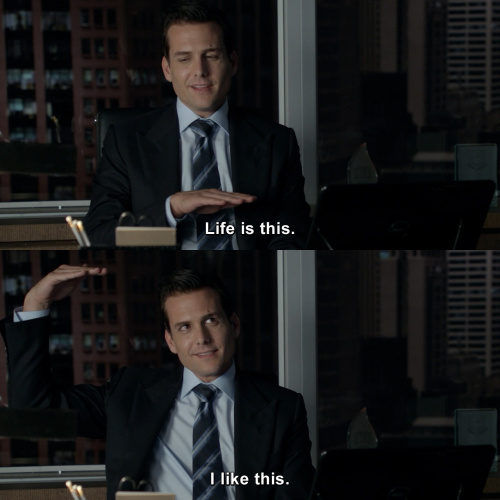

I want to take a moment to reflect on what I genuinely believe will be one of the most defining experiences of my life: my internship at ICONIQ Growth.
It might sound dramatic, however, the level of exposure I had was unlike anything I had ever experienced before. The volume of information, the sheer credibility of my coworkers, and the caliber of conversations recalibrated my understanding of what “high level” actually means. Yes, my skill set improved in very tangible ways (Excel mouse trap). But the real shift was not technical. It was mental.
There were moments when I would sit in a room and almost laugh at how unreal it felt — across the table from partners behind Anthropic’s Series F, on calls with billionaires, and in conversations with former leaders of companies like Adyen, Datadog, and Coupa. All while working alongside some of the most driven individuals I have ever met.
For my Suits lovers, below is the absolute greatest way I can depict my time at ICONIQ.

Takeaways
1. Ethos cannot be overstated
Coming from a state school, I used to hear the same recycled line all the time: school does not matter, only hard work does. This is entirely incorrect.
Background and credibility shape first impressions, and those impressions determine which rooms you enter.
Before you even open your mouth, people are sizing you up. Where you went to school is one of the first filters. It is a quick and efficient way for others to gauge your discipline, your standards, and the level of competition you were able to survive. Fair or not, that is how the world works.
2. Reputation is priceless
Credibility matters, but underperforming is the quickest way to become forgettable. Ethos gets you in the room. Results determine whether you deserve to stay.
Pedigree alone has a short shelf life. It may earn you an introduction, but it does not excuse complacency.
At ICONIQ, nearly everyone came from a top school or elite bank. That background was not a safety net rather an expectation. No one relaxed because of where they came from. If anything, the pressure to uphold that standard was even higher.
3. Ego is fuel
In a world this competitive, there is no room for insecurity or self doubt. No one is slowing down so you can decide whether you belong. Whether it is objectively true or not, you have to believe you are the best person for the job. Conviction is table stakes.
If you hesitate, someone else will not. The gap is rarely intelligence, it is belief. Confidence in your judgment and the willingness to stand by your decisions is what separates you.
The world does not reward the best Excel or PowerPoint monkeys. It rewards people with a thesis. The ones who can process information, form clear opinions, and defend them without flinching. That is where winning lives.
4. Never be so stubborn you cannot change your mind
This is a slight variation of Tim Cook’s quote, “Never be so proud you can’t change your mind,” but the principle is the same. Extreme confidence is powerful, yet it can quietly evolve into a know it all mindset. Conviction and presence matter. However, the ability to identify your blind spots and actively learn from others is an even stronger signal.
This becomes especially clear in investing. When you are taking hundreds of calls a month, you are constantly exposed to founders who live and breathe their markets. You cannot afford to enter every conversation assuming you are the smartest person in the room. The real skill is being able to contribute meaningfully to high level discussions while staying humble enough to absorb new information. That balance is rare.
One of my biggest takeaways was simple: everyone has something to teach. The moment you think you have nothing left to learn is the moment you stop growing.
5. Take every call
As mentioned above, everyone has something to teach. Whether it is one of the hundred founder calls you take as an investor or a conversation with your five year old cousin, there is always something to learn. Knowledge is not scarce. It is everywhere, if you are paying attention.
Because industries run so deep and expertise compounds over years, the easiest way to accelerate your learning is simple: talk to the people who are already great at what you are trying to understand. Go straight to the source. Professionals compress decades of trial and error into a single conversation. If you are willing to ask thoughtful questions and actually listen, you can borrow experience instead of waiting to earn it the hard way.
6. The greatest asset will always be your network
If there is one lesson that stands above the rest, it is this: your network is everything. It shapes your opportunities, the deals you win, and the rooms you are invited into. In nearly every meaningful outcome, people are the variable.
Reaching out to those who inspire you matters, but staying in touch is what actually separates you. Anyone can make an introduction. Few people build real, lasting relationships.
An investor at ICONIQ once told me she won a competitive healthcare deal because she remembered the founder loved grape juice. Before the final meeting, she sent a small gift basket with his favorite bottle. It was simple, thoughtful, and intentional. That extra step closed the deal.